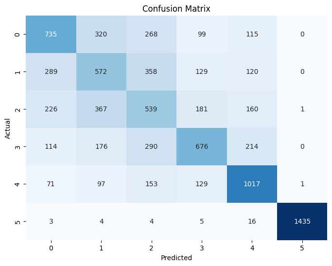
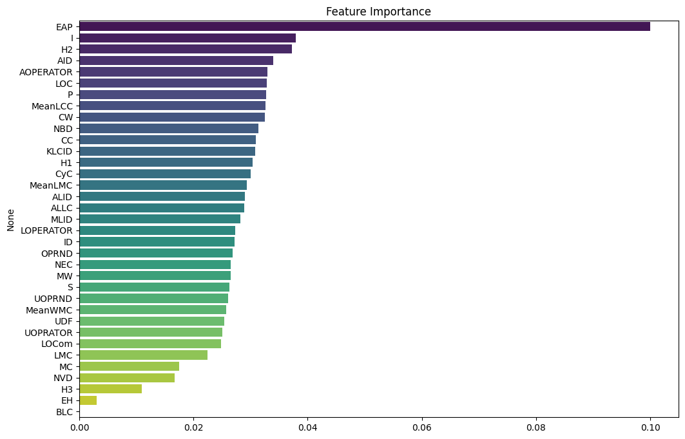

Overview
Computational notebooks combine executable code and narrative. DistilKaggle brings these two layers together in a research dataset: cell-level content linked to notebook-level measurements of code, documentation, and structure.
The paper introduces 34 metrics and a combined collection of 542,051 notebooks. Researchers can use the data to select notebooks by their characteristics, examine documentation practices, and develop or evaluate notebook analysis tools.
The archived release covers publicly available Python notebooks from September 2015 to October 2023. The code and Markdown collection covers 542,051 notebooks; the metrics CSV covers over 517,000. These are different coverage counts, not interchangeable totals.
Sources: MSR 2024 paper and Zenodo v1 release.
Dataset Construction
Cell content and notebook metrics offer two complementary views of the collection.
October 2020–October 2023
Earlier Kaggle collection
and execution metadata
to notebook and cell position
of over 517,000 notebooks
Dataset
Start with the metrics file for notebook-level analysis, or download the cell files to work directly with source content.
Scroll horizontally to see file sizes and download links.
| File | Contents | File size | Download |
|---|---|---|---|
notebook_metrics.csv | Notebook features for over 517,000 notebooks | 121.1 MB | Metrics CSV |
code.csv | Over 12 million code-cell rows | 3.9 GB | Code CSV |
markdown.csv | Over 5 million Markdown-cell rows | 1.5 GB | Markdown CSV |
DistilKaggle.tar.gz | Compressed dataset bundle | 1.6 GB | Dataset archive |
Choose the archive or the individual CSVs; you do not need both. Sizes are the rounded download sizes listed on Zenodo. The archive is compressed, while the CSV sizes are uncompressed.
How the cell files connect
Use kernel_id to identify a notebook and cell_index to order its cells. Both downloaded cell files use these keys.
Scroll horizontally to see every field description.
| Field | Available in | Meaning |
|---|---|---|
kernel_id | Both cell files | Kaggle notebook identifier |
cell_index | Both cell files | Position of the cell within the notebook |
source | Both cell files | The cell’s code or Markdown text |
output_type | Code cells | Type of the first recorded output, when present |
execution_count | Code cells | Recorded execution counter, when present |
Headers verified against the released CSVs; field behavior follows the cell extraction script. The script’s version-ID field is not present in these released headers. These CSVs retain source and selected metadata; they do not package the original runtime, dependencies, input datasets, or complete output payloads.
Notebook Metrics
The paper combines script-based measurements with features specific to computational notebooks.
34 metrics
Scroll within the table to browse all 34 metrics. Scroll horizontally to see metric names.
| Group | Paper abbreviation | Metric |
|---|---|---|
| Basic code | LOC | Lines of code |
| Basic code | BLC | Blank code lines |
| Basic code | LOCom | Comment lines |
| Basic code | CW | Words in comments |
| Basic code | S | Statements |
| Basic code | P | Parameters |
| Basic code | UDF | User-defined functions |
| Complexity | CyC | Cyclomatic complexity |
| Complexity | NBD | Nested block depth |
| Complexity | KLCID | Kind of line of code identifier density |
| Halstead | OPRND | Operands |
| Halstead | OPRAT | Operators |
| Halstead | UOPRND | Unique operands |
| Halstead | UOPRAT | Unique operators |
| Readability | ALLC | Average code line length |
| Readability | ID | Identifiers |
| Readability | AID | Average number of identifiers |
| Notebook | CC | Code cells |
| Notebook | MeanLCC | Mean lines per code cell |
| Notebook | I | Imports |
| Notebook | MeanWMC | Mean words per Markdown cell |
| Notebook | H1 | Level-one Markdown headings |
| Notebook | H2 | Level-two Markdown headings |
| Notebook | H3 | Level-three Markdown headings |
| Notebook | MC | Markdown cells |
| Notebook | MeanLMC | Mean lines per Markdown cell |
| Notebook | MW | Markdown words |
| Notebook | LMC | Lines in Markdown cells |
| Notebook | DMC | Distribution of Markdown cells |
| Notebook | DI | Distribution of imports |
| Notebook | PT | Author performance tier |
| Notebook | EAP | External API popularity |
| Notebook | NVD | Visualization outputs |
| Notebook | EC | Executed cells |
No matching metrics. Try a different term or choose “All groups”.
This table describes the paper’s metric vocabulary, not a promise of identical CSV column names. The released code uses names such as NEC, UOPRATOR, AOPERATOR, and LOPERATOR, and includes extra features. Check the actual header and aggregation script before selecting columns. A metric is a measured feature, not a validated quality score on its own.
Sample Application
The repository’s example explores predicting an author’s Kaggle Performance Tier from notebook metrics with a Random Forest classifier.
The saved notebook balances classes with random undersampling, uses an 80/20 training/test split, and reports 0.56 accuracy on 8,884 test examples. External API popularity (EAP) has the highest feature importance in that saved run.
The figures and numbers below are archived outputs from the example notebook. They have not been recomputed for this website. The saved run includes target labels 0–5; these are shown as recorded, without assigning tier names.




View the saved classification report
Scroll horizontally to see all result columns.
| Target label | Precision | Recall | F1 | Support |
|---|---|---|---|---|
| 0 | 0.51 | 0.48 | 0.49 | 1,537 |
| 1 | 0.37 | 0.39 | 0.38 | 1,468 |
| 2 | 0.33 | 0.37 | 0.35 | 1,474 |
| 3 | 0.55 | 0.46 | 0.50 | 1,470 |
| 4 | 0.62 | 0.69 | 0.65 | 1,468 |
| 5 | 1.00 | 0.98 | 0.99 | 1,467 |
| Macro average | 0.57 | 0.56 | 0.56 | 8,884 |
For a new predictive study, fit preprocessing on training data only and consider author-level splits. The archived example imputes before splitting and demonstrates a notebook-level split.
Quick Start
Download notebook_metrics.csv to your working directory. Install pandas with pip install pandas, then inspect the data and its schema.
import pandas as pd
metrics = pd.read_csv("notebook_metrics.csv")
print(metrics.shape)
print(metrics.columns.tolist())
print(metrics.head())
Optional: sample the code-cell file
First download code.csv (3.9 GB) into the same working directory. Then run:
import pandas as pd
for cells in pd.read_csv("code.csv", chunksize=10_000):
print(cells.head())
breakThe cell CSVs are large; use samples, chunks, or selected columns rather than loading every cell at once. See the repository utilities for aggregation and the example analysis.
BibTeX
Mojtaba Mostafavi Ghahfarokhi, Arash Asgari, Mohammad Abolnejadian, and Abbas Heydarnoori. 2024. DistilKaggle: A Distilled Dataset of Kaggle Jupyter Notebooks. MSR ’24, 647–651.
Paper DOI: 10.1145/3643991.3644882
Dataset DOI: 10.5281/zenodo.10317389
@inproceedings{mostafavi-msr2024-DistilKaggle,
author = {Mostafavi Ghahfarokhi, Mojtaba and Asgari, Arash and
Abolnejadian, Mohammad and Heydarnoori, Abbas},
title = {{DistilKaggle}: A Distilled Dataset of {Kaggle} {Jupyter} Notebooks},
booktitle = {Proceedings of the 21st International Conference on Mining Software Repositories},
series = {MSR '24},
year = {2024},
pages = {647--651},
publisher = {Association for Computing Machinery},
address = {New York, NY, USA},
location = {Lisbon, Portugal},
doi = {10.1145/3643991.3644882},
url = {https://doi.org/10.1145/3643991.3644882}
}